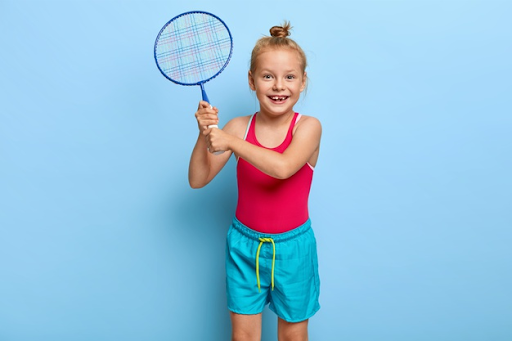

We set our routine according to our workout schedule, count the number of repetitions while exercising, etc., just based on math.
Task: let the kids practice any type of exercise like skipping, push-ups, running, and ask them to keep a count of their repetitions.
4. Sports

Basic knowledge of math also helps keep track of scores for every sports activity. Geometry and trigonometry can help your teens who want to improve their skills in sports. It can help them find the best way to hit a ball, make a basket or run around the track.
Task: Introduce the kids to a new sport on TV and let them judge the winning team.